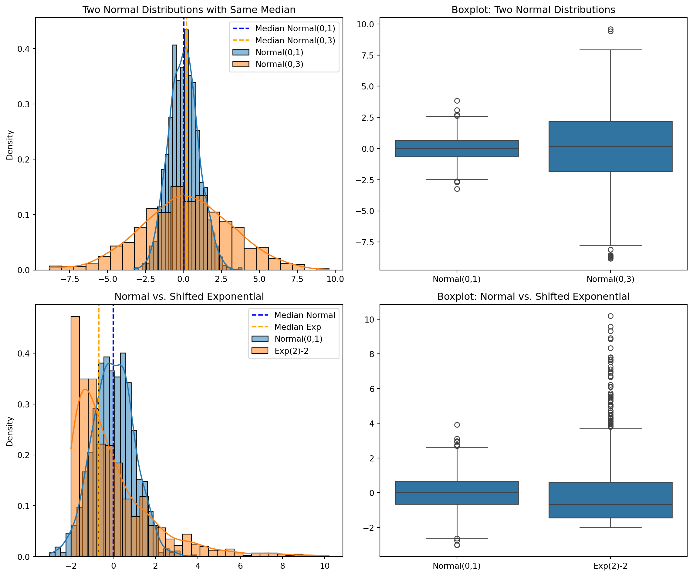

import numpy as np
import matplotlib.pyplot as plt
import seaborn as sns
from scipy import stats
import math
# Set random seed for reproducibility
np.random.seed(42)
n = 1000 # Sample size
# Scenario 1: Two normal distributions with same median/mean but different variances
norm1 = np.random.normal(0, 1, n) # Normal with mean=0, sd=1
norm2 = np.random.normal(0, 3, n) # Normal with mean=0, sd=3
# Scenario 2: Normal vs. shifted exponential
exp_scale = 2
exp_shift = -2
norm3 = np.random.normal(0, 1, n) # Normal with mean=0, sd=1
exp1 = np.random.exponential(exp_scale, n) + exp_shift # Shifted exponential
# Calculate theoretical and empirical statistics
print("=== Scenario 1: Two Normal Distributions ===")
print(f"Normal 1 - Mean: {np.mean(norm1):.4f}, Median: {np.median(norm1):.4f}, Variance: {np.var(norm1):.4f}")
print(f"Normal 2 - Mean: {np.mean(norm2):.4f}, Median: {np.median(norm2):.4f}, Variance: {np.var(norm2):.4f}")
print("\n=== Scenario 2: Normal vs. Shifted Exponential ===")
print(f"Normal - Mean: {np.mean(norm3):.4f}, Median: {np.median(norm3):.4f}")
print(f"Shifted Exp - Mean: {np.mean(exp1):.4f}, Median: {np.median(exp1):.4f}")
print(f"Shifted Exp - Theoretical Mean: {exp_scale + exp_shift}, Theoretical Median: {exp_scale * math.log(2) + exp_shift:.4f}")
# Perform Mann-Whitney U tests
u_stat1, p_value1 = stats.mannwhitneyu(norm1, norm2, alternative='two-sided')
u_stat2, p_value2 = stats.mannwhitneyu(norm3, exp1, alternative='two-sided')
# Perform Welch's t-tests (t-test with unequal variances)
t_stat1, t_p_value1 = stats.ttest_ind(norm1, norm2, equal_var=False)
t_stat2, t_p_value2 = stats.ttest_ind(norm3, exp1, equal_var=False)
print("\n=== Statistical Test Results ===")
print("Scenario 1 (Two Normals with Different Variances):")
print(f" Mann-Whitney U Test - U: {u_stat1}, p-value: {p_value1:.6f}, Significant: {p_value1 < 0.05}")
print(f" Welch's t-test - t: {t_stat1:.4f}, p-value: {t_p_value1:.6f}, Significant: {t_p_value1 < 0.05}")
print("\nScenario 2 (Normal vs. Shifted Exponential):")
print(f" Mann-Whitney U Test - U: {u_stat2}, p-value: {p_value2:.6f}, Significant: {p_value2 < 0.05}")
print(f" Welch's t-test - t: {t_stat2:.4f}, p-value: {t_p_value2:.6f}, Significant: {t_p_value2 < 0.05}")
# Visualize distributions
plt.figure(figsize=(12, 10))
# Scenario 1: Two normal distributions
plt.subplot(2, 2, 1)
sns.histplot(norm1, kde=True, stat="density", label="Normal(0,1)")
sns.histplot(norm2, kde=True, stat="density", label="Normal(0,3)")
plt.axvline(x=np.median(norm1), color='blue', linestyle='--', label=f'Median Normal(0,1)')
plt.axvline(x=np.median(norm2), color='orange', linestyle='--', label=f'Median Normal(0,3)')
plt.title('Two Normal Distributions with Same Median')
plt.legend()
plt.subplot(2, 2, 2)
data1 = np.concatenate([norm1, norm2])
groups1 = ['Normal(0,1)']*n + ['Normal(0,3)']*n
sns.boxplot(x=groups1, y=data1)
plt.title('Boxplot: Two Normal Distributions')
# Scenario 2: Normal vs. shifted exponential
plt.subplot(2, 2, 3)
sns.histplot(norm3, kde=True, stat="density", label="Normal(0,1)")
sns.histplot(exp1, kde=True, stat="density", label=f"Exp({exp_scale}){exp_shift}")
plt.axvline(x=np.median(norm3), color='blue', linestyle='--', label=f'Median Normal')
plt.axvline(x=np.median(exp1), color='orange', linestyle='--', label=f'Median Exp')
plt.title('Normal vs. Shifted Exponential')
plt.legend()
plt.subplot(2, 2, 4)
data2 = np.concatenate([norm3, exp1])
groups2 = ['Normal(0,1)']*n + [f'Exp({exp_scale}){exp_shift}']*n
sns.boxplot(x=groups2, y=data2)
plt.title('Boxplot: Normal vs. Shifted Exponential')
plt.tight_layout()
plt.show()
# Rank analysis to understand why
print("\n=== Rank Analysis ===")
# Combine and rank all values for scenario 1
combined1 = np.concatenate([norm1, norm2])
ranks1 = stats.rankdata(combined1)
rank_norm1 = ranks1[:n]
rank_norm2 = ranks1[n:]
print(f"Scenario 1 - Mean rank Normal(0,1): {np.mean(rank_norm1):.2f}")
print(f"Scenario 1 - Mean rank Normal(0,3): {np.mean(rank_norm2):.2f}")
# Combine and rank all values for scenario 2
combined2 = np.concatenate([norm3, exp1])
ranks2 = stats.rankdata(combined2)
rank_norm3 = ranks2[:n]
rank_exp1 = ranks2[n:]
print(f"Scenario 2 - Mean rank Normal(0,1): {np.mean(rank_norm3):.2f}")
print(f"Scenario 2 - Mean rank Exp({exp_scale}){exp_shift}: {np.mean(rank_exp1):.2f}")=== Scenario 1: Two Normal Distributions ===
Normal 1 - Mean: 0.0193, Median: 0.0253, Variance: 0.9579
Normal 2 - Mean: 0.2125, Median: 0.1892, Variance: 8.9453
=== Scenario 2: Normal vs. Shifted Exponential ===
Normal - Mean: 0.0058, Median: -0.0003
Shifted Exp - Mean: -0.0653, Median: -0.6785
Shifted Exp - Theoretical Mean: 0, Theoretical Median: -0.6137
=== Statistical Test Results ===
Scenario 1 (Two Normals with Different Variances):
Mann-Whitney U Test - U: 474548.0, p-value: 0.048727, Significant: True
Welch's t-test - t: -1.9402, p-value: 0.052586, Significant: False
Scenario 2 (Normal vs. Shifted Exponential):
Mann-Whitney U Test - U: 605348.0, p-value: 0.000000, Significant: True
Welch's t-test - t: 1.0286, p-value: 0.303827, Significant: False
=== Rank Analysis ===
Scenario 1 - Mean rank Normal(0,1): 975.05
Scenario 1 - Mean rank Normal(0,3): 1025.95
Scenario 2 - Mean rank Normal(0,1): 1105.85
Scenario 2 - Mean rank Exp(2)-2: 895.15